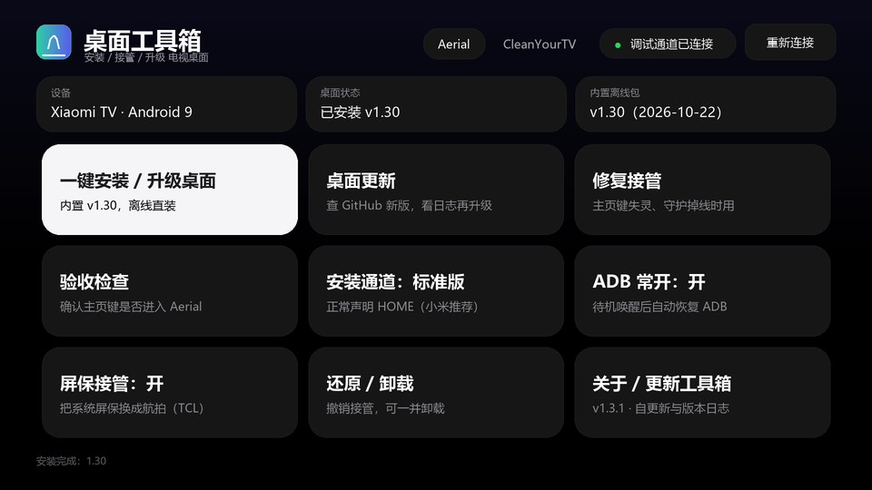
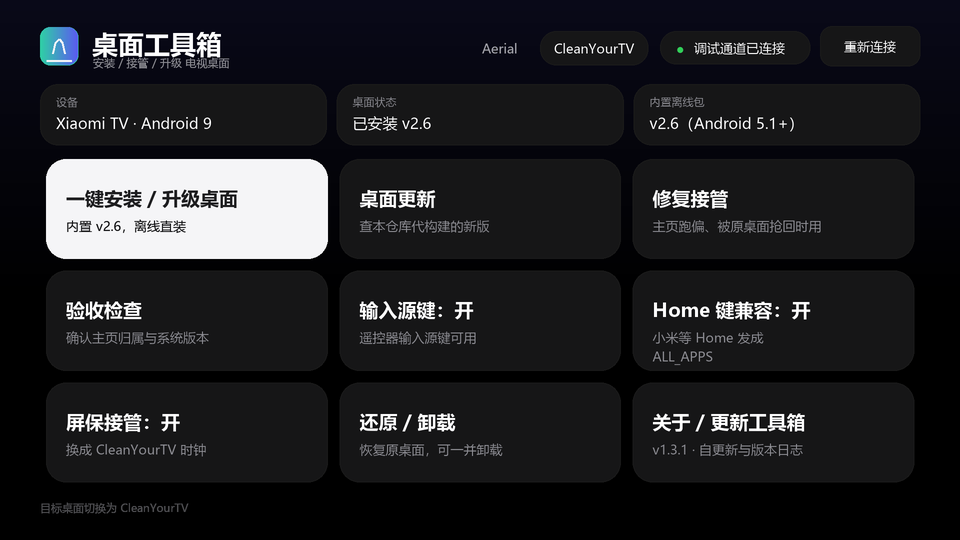

桌面工具箱把繁琐的 ADB 命令固化进 APK：安装、授权、接管主页键、屏保、验收——全自动完成。支持 Aerial 与 CleanYourTV 两款高质量开源桌面。
Install open-source TV launchers (Aerial / CleanYourTV) on Android TV boxes and take over the HOME button — no PC, no root. Ships as a TV app and a phone app.
官方安装说明要在电脑上敲一长串 adb 命令，任何一步顺序错了，装得上却主页键回不去。这个工具把这些一次性固化好，还专门解决了一批真实痛点。
The official guide is a wall of adb commands on a PC. One wrong step and the HOME button won't return. We bake the whole flow in — and fix real-world edge cases.
电视连不上 GitHub？官方安装包直接内置在 APK 里，安装全程不联网。Launcher APKs are bundled inside the app — installs work fully offline, even when the box can't reach GitHub.
手边没电脑？装手机端，填电视 IP 或用局域网扫描，远程完成安装、遥控、截图。No PC handy? Use the phone app: type the TV IP or scan the LAN, then install remotely with a built-in remote & screenshot.
装完主页键回原桌面？"修复接管"只重跑授权；"验收检查"按一次主页键确认进的是新桌面。HOME button still returns to stock? "Repair" re-runs grants only; "Verify" presses HOME and checks the foreground window.
TCL / 雷鸟拒绝 ADB 安装 → 走 guard 通道；小米待机后 ADB 被关 → "ADB 常开"自动开回。TCL/FFALCON block ADB installs → guard channel; Xiaomi kills ADB on sleep → "Keep ADB" re-enables it.
"桌面更新"进页面才联网，比对本仓库代构建发行版，展示更新日志后再下载。"Desktop Update" checks online only on demand, compares against our built releases, and shows the changelog before downloading.
CleanYourTV 会重新启用原桌面并把主页还回去，可一并卸载，不留残影。CleanYourTV re-enables the original launcher and gives HOME back, then optionally uninstalls — nothing left behind.
两个应用共用同一套核心逻辑，所以手机上远程装出来的结果，和把工具箱装到电视上自己装，完全一样。
Both apps share the same core module, so remote installs from the phone match on-device installs exactly.
两个上游互斥，一次只接管一个。界面、图标、字体都按 Aerial 的 tvOS 设计语言统一。
Two mutually exclusive launchers, one taken over at a time. Same tvOS visual language throughout.
tvOS 风格，航拍屏保，无障碍守护兜底。
官方 Release 直接内置，离线可装，更新查上游。
内置版本 v1.52
Apple TV 风格，dock + 玻璃高光，遥控器按键服务。
上游只发源码，由本仓库代构建并降到 Android 5.1。
内置版本 v3.0.0
电视端双模式主界面：一屏放下安装、更新、修复、验收与各开关。


两个端都是独立 APK，按设备选择。Android 5.0（API 21）及以上可用。
所有版本与更新日志见 GitHub Releases · 源码以 MIT 协议开源